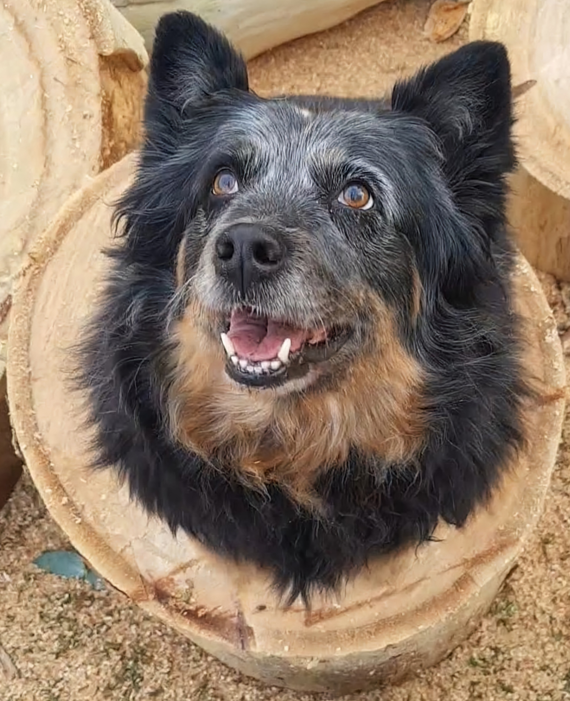

Alex Nepomuceno

Summary
Education
-
Bachelor of Science, Genetics and Zoology, University of Pretoria (2011
- 2015)
-
Bachelor of Science (Honours), Entomology, University of Pretoria (2016)
- Masters in Entomology, University of Pretoria (2017-2022)
Work experience
-
Rabbit Farming (2022 - present)
- Building of animal housing infrastructure
- Animal husbandry such as breeding, care giving and cleaning
-
Business administration such as bank reconciliation, paying staff
etc.
- Administration of medication
-
Sheep Farming (2023 - present)
- Building of paddock fencing, feeders and night stables
-
Sheep husbandry such as feeding, hoof trimming, vaccinations and
aiding in lambing
- Medical assistance when sheep get sick
Skills
Welding
Animal cage building
Animal hoof trimming
Giving injections
Rabbit and sheep handling
Business management
About Me
Contact Me